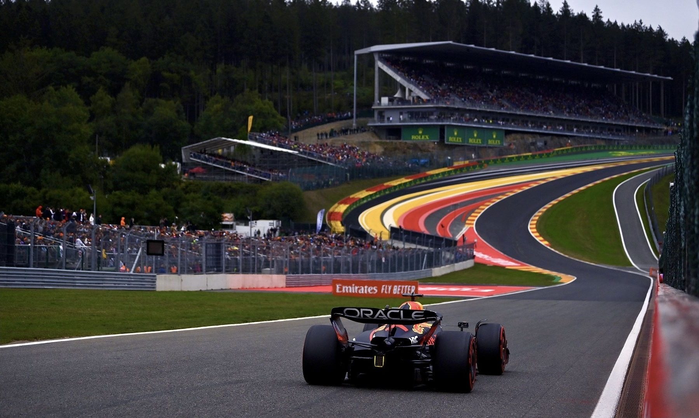

What Is Formula 1?
Formula 1, also known as F1, is an international motorsport series featuring high-performance single-seat race cars. Drivers compete on different race tracks around the world throughout the season.
F1 is not only about the drivers. Teams work on the design, engineering, and performance of their cars to compete at the highest level of motorsport.
What Happens During an F1 Race Weekend?
A Formula 1 race weekend includes several sessions that prepare the drivers and teams for the main race.
- Practice - Drivers learn the track and teams test their cars.
- Qualifying - Drivers compete for their starting positions.
- Race - Drivers compete to finish in the best position possible.
Some F1 Facts
- Formula 1 races take place at tracks around the world.
- Each team has two drivers.
- Teams compete for both the Drivers' and Constructors' Championships.
- Strategy, teamwork, and car performance are important during a race.
My Top Three F1 Drivers
- Max Verstappen
- Kimi Antonelli
- Lando Norris
Learn More About Formula 1
You can learn more about Formula 1, the drivers, teams, and race results on the official Formula 1 website.